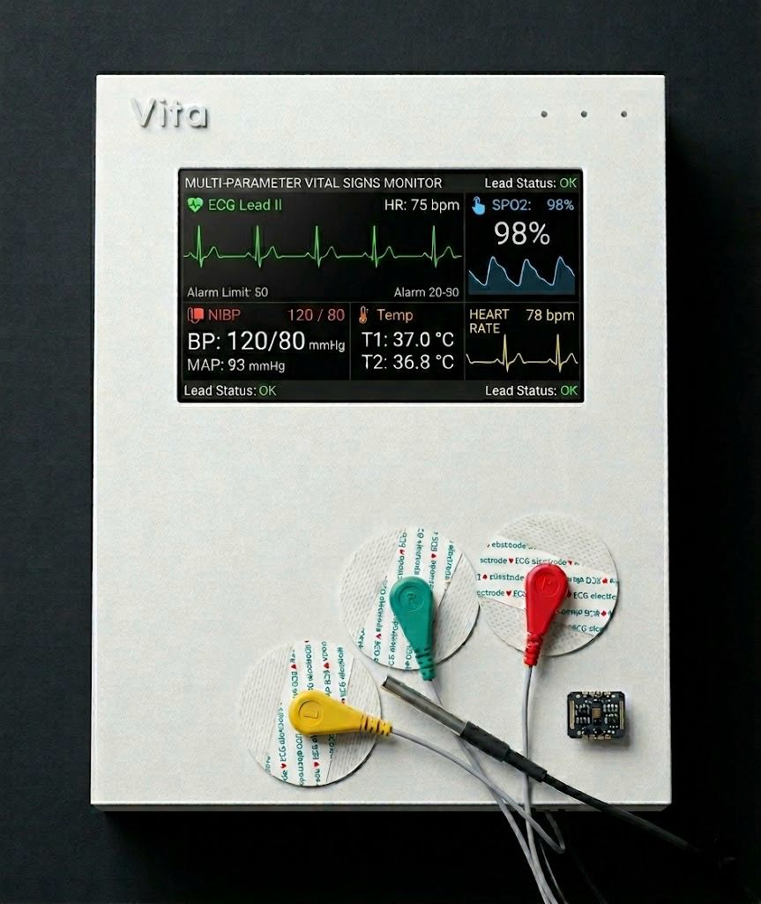

Smart
Vital
Signs
Monitor
Next-generation continuous monitoring powered by Raspberry Pi. Delivering intelligent medical actions and predictive analytics in real-time.

The Shift in Healthcare
Current Reality
- Intermittent monitoring misses critical events.
- Manual observation introduces human error.
- Dumb alarms without contextual medical guidance.
- Data is lost, hindering trend tracking.
The Vita Objective
- Continuous, real-time multi-parameter tracking.
- Intelligent, automated signal interpretation.
- Meaningful alarms with recommended clinical actions.
- Local database integration for historic trends.
Workflow Protocol
1. Acquisition
Sensors constantly map ECG, SpO2, and Temp data from the patient.
2. Processing
Signal amplification and precise Analog-to-Digital conversion.
3. Analysis
Raspberry Pi applies logic matrices and stores historical data locally.
4. Action
UI displays intelligent alarms paired with exact medical directives.
System Architecture
ECG
AD8232SpO2
MAX30102Temp
DS18B20ADC Interface
ArduinoRaspberry Pi 4
Core Processing & DB
Touch UI
Local DB
Alarms
Live Simulation
Future Horizons
AI Analytics
Machine learning models for predictive analytics, forecasting patient deterioration.
Cloud & Mobile
Remote access through secure cloud infrastructure and dedicated mobile apps.
EHR Integration
Direct API integration with hospital Electronic Health Records.
Thank You
Ready to view the full project documentation and team details? Scan the code below with your mobile camera.